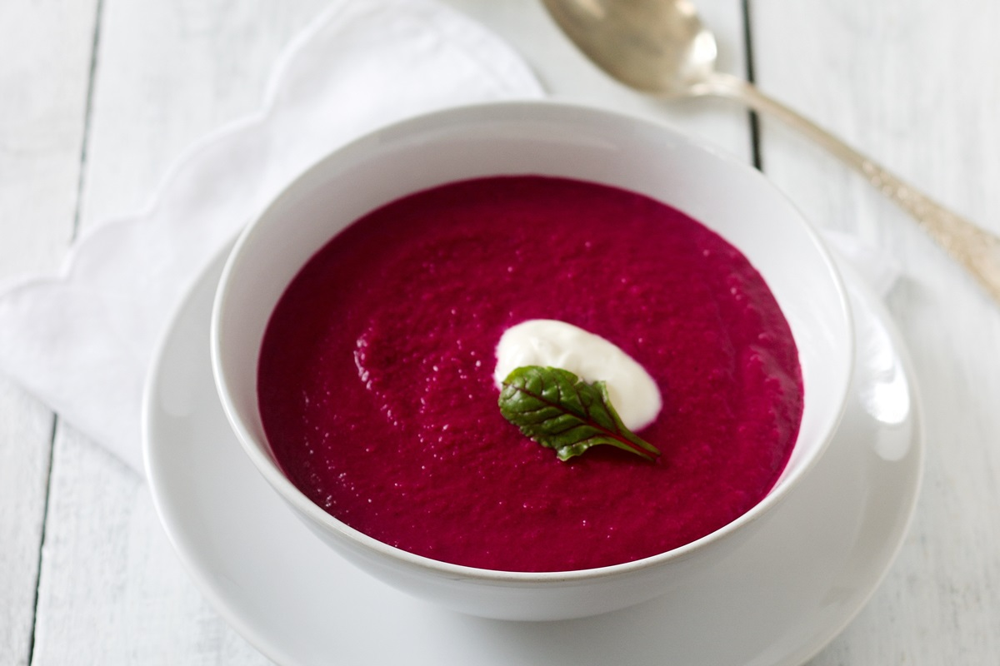

Beet Soup

Description
Made with red beets and plenty of vegetables, this vegan soup is nutritious, flavorful, and delicious. It's so easy to make in one pot on the stove with minimal prep work involved.Plus, beet soup is easy to make ahead and freezes really well so you can meal prep lunches and dinners for days or months to come.
Ingredients
- 3 tablespoons olive oil
- 1 medium onion, chopped
- 3 cloves garlic, chopped
- 6 medium beets, peeled and chopped
- 2 cups beef stock
- salt and freshly ground black pepper
- 1⁄4 cup heavy cream
Steps
- Heat olive oil in a large saucepan over medium heat. Cook and stir onion and garlic in hot oil until soft but not browned, about 5 minutes. Stir in beets and cook for 1 minute.
- Pour in stock, season with salt and pepper. Bring to a boil, cover, reduce heat to medium-low, and simmer until beets are tender, 20 to 30 minutes. Remove from heat and allow to cool slightly.
- Working in batches, pulse soup in a food processor until smooth. Return to the saucepan and cook over low heat until heated through. Ladle soup into 4 bowls and garnish each with a swirl of cream.